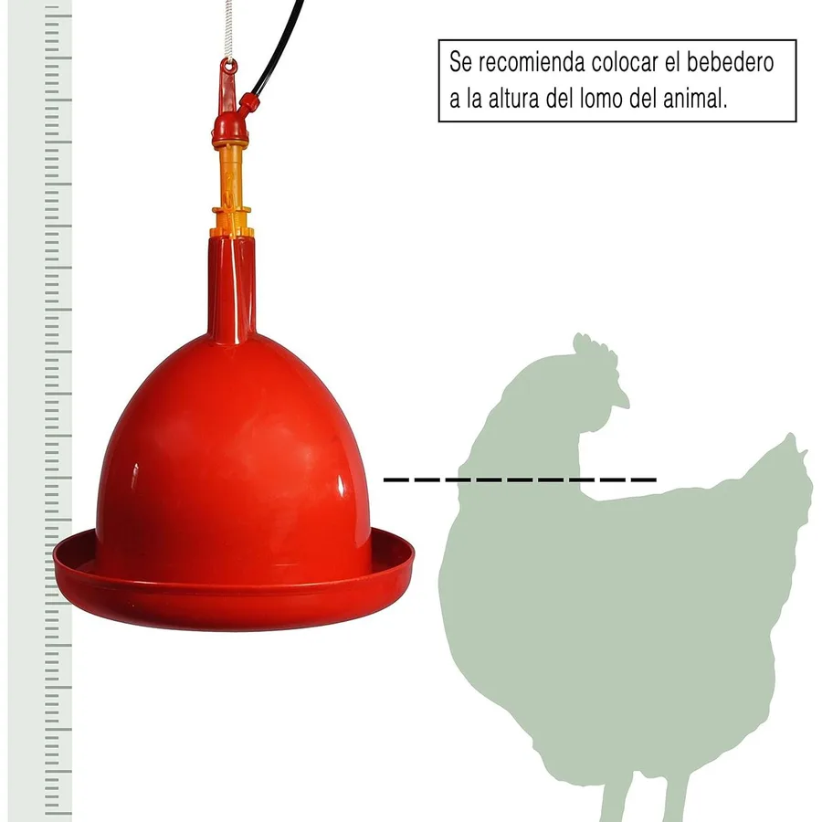

Bebederos · Tienda Granja Rentable
Bebedero de campana automático Finca Casarejo

Foto del producto del proveedor.
Precio estimado según tu país
Plazo estimado en la lista de países.
- España: 39,95 € · plazo estimado 2–4 días. Envío desde almacén en España, sin gastos de importación.
El bebedero de campana se conecta a un depósito o a la red y mantiene siempre el mismo nivel de agua en el plato gracias a su válvula automática. Se cuelga a la altura del lomo de las aves, así el agua queda lejos de la cama, no se vuelca y no se llena de viruta. Es el sistema que usan las granjas de verdad para lotes medianos: un solo bebedero da de beber a decenas de gallinas sin que tengas que cargar cubos cada mañana. Finca Casarejo es una marca española especializada en avicultura, con recambios y soporte en España.
Qué incluye
- 1 bebedero de campana automático
- Válvula de nivel incorporada
Para qué puede servir
- Lotes de ponedoras en suelo o en parque
- Pollos de engorde en la fase final
- Sustituir bebederos de plato que se vuelcan y ensucian el agua
Cómo se usa
- Cuélgalo a la altura del lomo de tus aves y nivélalo
- Conecta la manguera al depósito elevado o a la red con reductor
- Regula la válvula para dejar unos 2 cm de agua en el plato
- Enjuaga el plato un par de veces por semana
Quién te vende
Te vende Juan Pablo González García, persona física, NIF 78701119H, Calle Juan Rumeu García 6 bajo, 38008 Santa Cruz de Tenerife. El correo dahanitrading@gmail.com es solo un correo de contacto.
Precio, plazo e impuestos
El país de esta ficha sale de la IP. Si no podemos detectarlo, mostramos España y el precio lleva los impuestos incluidos. Puedes elegir otro país en el selector de esta página. En una compra desde Canarias se aplica el tipo general del IGIC, el 7 %, incluido en el precio. No es el IVA.
El producto se envía directamente desde el proveedor. Contacto: dahanitrading@gmail.com, solo un correo.
Desistimiento, devolución y garantía
Tienes 14 días naturales desde que recibes el producto para comunicar el desistimiento, sin dar motivo. El reembolso lo hace el titular en un plazo de 14 días desde la prueba de envío. Quien responde ante ti es Granja Rentable, no el proveedor.
Antes de comprar, escríbenos y te indicamos la dirección y el coste de la devolución.